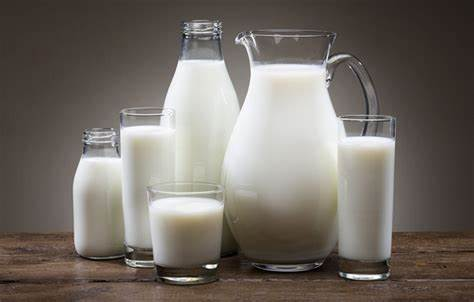
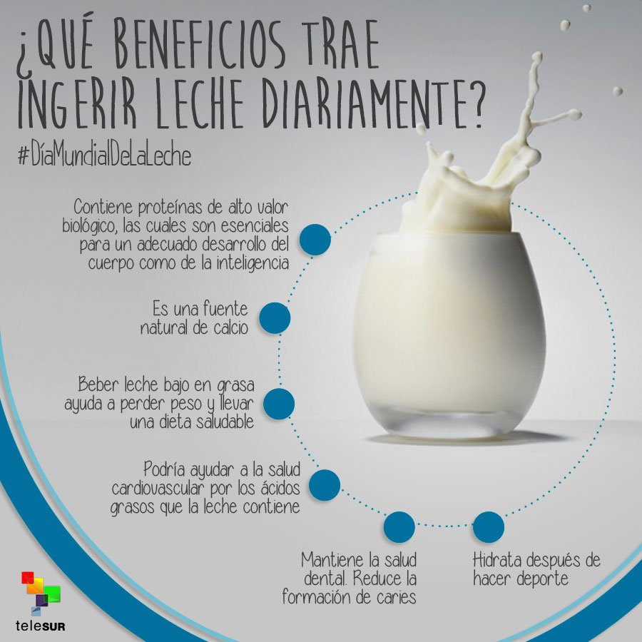

Características
- 100% natural
- Alto contenido de calcio
- Sin conservantes 
Beneficios
Fortalece tus huesos y mejora tu salud general.
Testimonios
"Este producto cambió mi vida. ¡Lo recomiendo!"
¡Comprar ahora!
Descripción e intereses
Nuestro producto de leche es ideal para toda la familia. Con su alto contenido de calcio y sin conservantes, es perfecto para mantener una vida saludable. Fortalece tus huesos y mejora tu bienestar general con cada vaso.
Reseñas
| Usuario | Reseña | Puntuación |
|---|---|---|
| Prof Gio | ¡Excelente producto, mis hijos lo adoran! | ★★★★★ |
| Nelson Funez | Noté una gran diferencia en mi actividad. | ★★★★☆ |